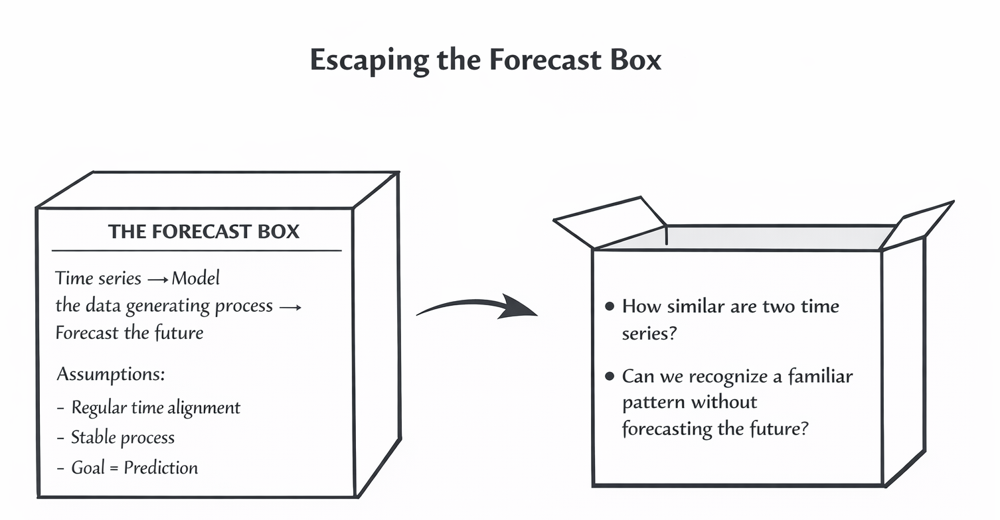
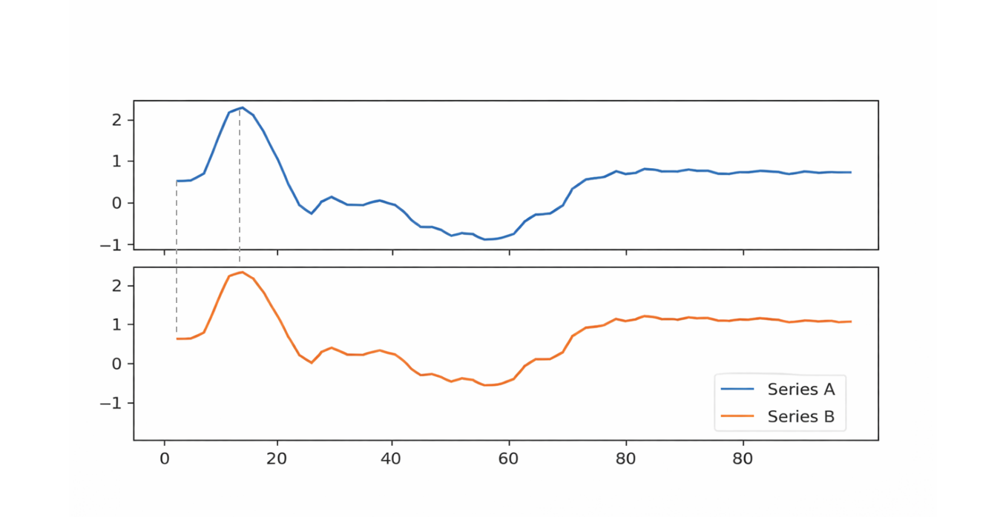
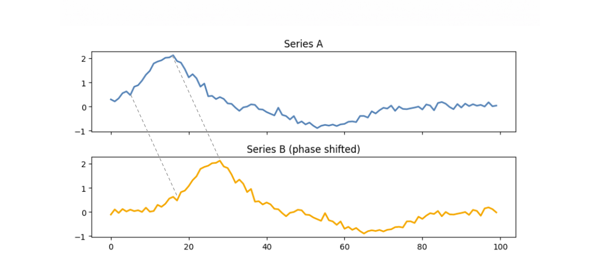
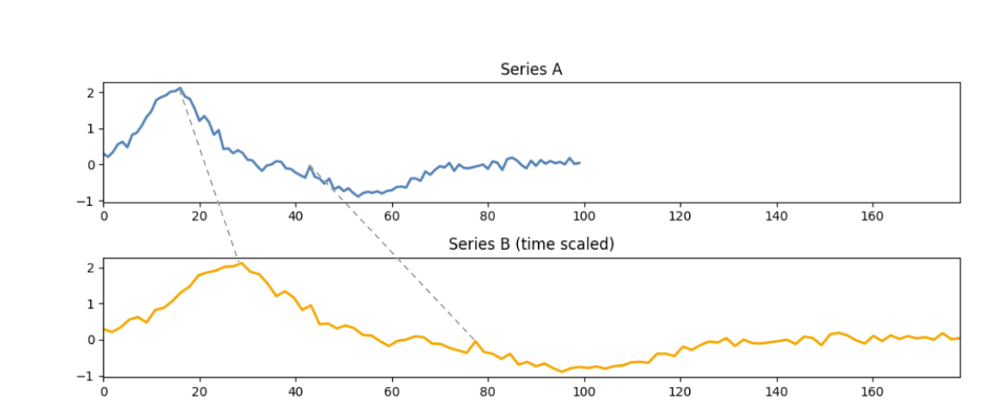
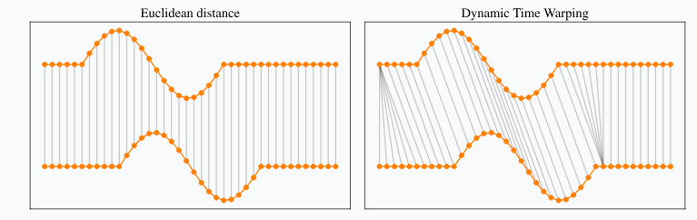
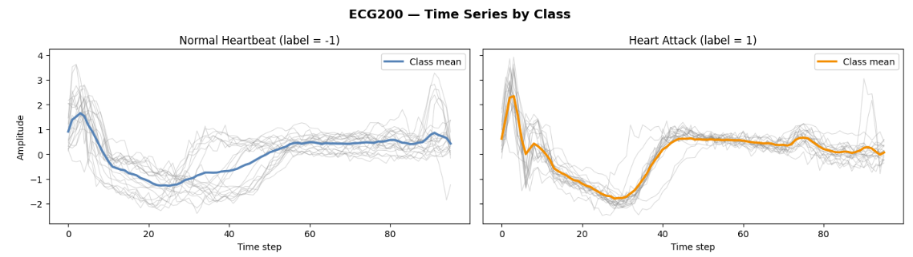

| Model Evaluation : Aligned Data | |||||||
| Model | Accuracy | Precision | Recall (Sensitivity) | Specificity | F1 | Balanced_Accuracy | AUC |
|---|---|---|---|---|---|---|---|
| knn_euclidean_k5 | 0.900 | 0.897 | 0.953 | 0.806 | 0.924 | 0.879 | 0.954 |
| svm_rbf | 0.870 | 0.881 | 0.922 | 0.778 | 0.901 | 0.850 | 0.931 |
| logreg | 0.840 | 0.900 | 0.844 | 0.833 | 0.871 | 0.839 | 0.910 |
| knn_dtw_k5 | 0.790 | 0.803 | 0.891 | 0.611 | 0.844 | 0.751 | 0.917 |
Motivation by failure
New Paradigms

Ideal Universe

Time series in the real world


Dynamic Time Warping

NotePoint-by-Point Matching example
Euclidean distance
M E O W
| | | |
M E O W
Dynamic Time Warping
M E O W
| | |\⟍ |
| | | \ ⟍ |
| | | \ ⟍ |
| | | \ ⟍ |
M E O O O WEmpirical demonstration and Performance metrics
| Model Evaluation : Phase shifted data | |||||||
| Model | Accuracy | Precision | Recall (Sensitivity) | Specificity | F1 | Balanced_Accuracy | AUC |
|---|---|---|---|---|---|---|---|
| knn_dtw_k5 | 0.700 | 0.730 | 0.844 | 0.444 | 0.783 | 0.644 | 0.721 |
| logreg | 0.600 | 0.786 | 0.516 | 0.750 | 0.623 | 0.633 | 0.639 |
| knn_euclidean_k5 | 0.480 | 0.620 | 0.484 | 0.472 | 0.544 | 0.478 | 0.482 |
| svm_rbf | 0.560 | 0.833 | 0.391 | 0.861 | 0.532 | 0.626 | 0.661 |
Code
summary_f1_drop |>
gt() |>
tab_header(title = "F1 Degradation from phase shift") |>
fmt_number(columns = where(is.numeric), decimals = 3) |>
data_color(columns = F1_drop, palette = "Reds")| F1 Degradation from phase shift | |||
| Model | F1_clean | F1 | F1_drop |
|---|---|---|---|
| knn_euclidean_k5 | 0.924 | 0.544 | 0.380 |
| svm_rbf | 0.901 | 0.532 | 0.369 |
| logreg | 0.871 | 0.623 | 0.248 |
| knn_dtw_k5 | 0.844 | 0.783 | 0.062 |
Why this matters
